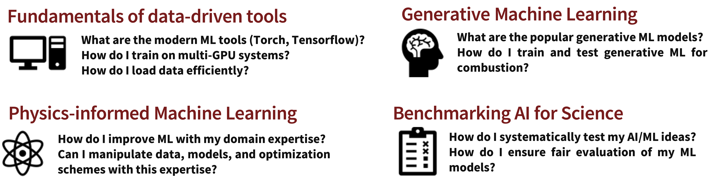

Mission
To foster a dynamic forum for exchanging ideas, cutting-edge data, advanced methods, and models related to ML techniques for fluid dynamics, turbulence, and environmental science - fields applications that are crucial to the development of energy, climate resilience, wildfire mitigation and safety systems.
Agenda
- A 20-day-long ML challenge (involving 1-2 person(s) per team) will be held to tackle temporal modeling in fluid dynamics/turbulence with open-source data.
- Prize: GPU credits, and leading teams will be invited towards a joint publication.
- Daily talks on cutting-edge trends will be given by AI/ML experts within Stanford, academic guests, and industry partners from the Greater Silicon Valley ecosystem. Topics include:

Invited Speakers (In alphabetical order)
Stay tuned for the speaker announcements…